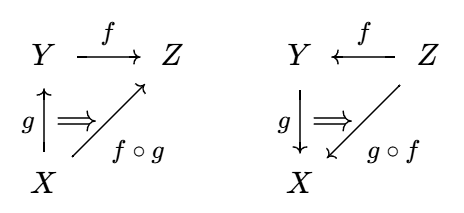
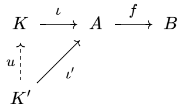
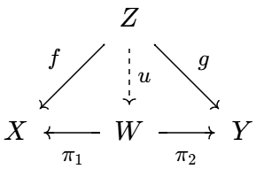
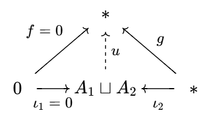

来自:
- 李文威《代数学方法》第二章
- 李文威《代数学讲义》附录B
- 香蕉空间 - 范畴论入门
- John Baez《Category Theory Course》2019.09.03
- Pierre Schapira《Categories and homological algebra》2009.01.10
- 知乎专栏: 模与范畴
范畴
范畴的定义
形象地说, 范畴是一个有向图, 图中的顶点称为对象, 有向边称为态射. 具体定义如下:
一个范畴 (category) `cc C` 由它的对象集合 `"Ob"(cc C)` 和态射集合
`"Mor"(cc C)` 组成, 此外还应满足:
-
边与点的关系 `cc C` 中任意态射 `f` 都有确定的来源与目标对象.
换言之有来源映射和目标映射 `s, t: "Mor"(cc C) to "Ob"(cc C)`.
若 `f` 是一个态射, 那么 `X := s(f)`, `Y := t(f)` 都是对象,
`f` 称为从 `X` 到 `Y` 的态射, 记为 `X overset f to Y` 或 `f: X to Y`.
-
点与边的关系 `cc C` 中任意两个对象 `X, Y` 确定了一族态射.
将全体从 `X` 到 `Y` 的态射称为 `(X, Y)` 的 Hom 集:
`Hom_C(X, Y) := s^-1(X) nn t^-1(Y)`.
因此 `f: X to Y` 的另一种写法是 `f in Hom_C(X, Y)`.
-
态射的合成与恒等态射
设 `f: X to Y`, `g: Y to Z`, 定义 `f, g` 的二元合成为 `f @ g`: `X to Z`, 或简记为 `f g`.
对每个对象 `X`, 都存在态射 `"id"_X: X to X`, 称为 `X` 到自身的恒等态射.
态射的合成满足:
`f(g h) = (f g)h quad` (结合律)
`f @ "id"_X = f = "id"_Y @ f quad`(恒等态射的性质).
恒等态射的性质保证了 `"id"_X` 的唯一性.
- 态射的逆 设态射 `f: X to Y`, 若存在 `g: Y to X` 使得 `f g = "id"_Y`, `g f = "id"_X`,
则称 `g` 是 `f` 的逆, `f` 是可逆态射或同构. `X` 到 `Y`
的全体同构记为 `"Isom"_(cc C)(X, Y)`. 由恒等态射的性质知道,
逆若存在则必唯一.
- 简记 `"End"_(cc C)(X) := Hom_C(X, X)`, `"Aut"_(cc C)(X) := "Isom"_(cc C)(X, X)`,
分别称为 `X` 的自同态集和自同构集.
`"End"(X)` 是幺半群, `"Aut"(X)` 是群.
- 对象集和态射集皆空的范畴称为空范畴, 记为 `bb 0`.
以字母表示对象, 箭头表示态射, 范畴可以用箭头图表很好地可视化.
如果图表中的箭头合成殊途同归, 我们就说它是交换的, 故箭头图表又称为交换图表.
比如下图就有 `g f = h` 和 `v u = y x`.
这些图表可以用 quiver 在线绘制.
子范畴、反范畴、积范畴
称 `cc C` 是 `cc D` 的子范畴, 如果
- (金) `"Ob"(cc C) sube "Ob"(cc D)`;
- (木) `"Mor"(cc C) sube "Mor"(cc D)`;
- (水) `Hom_C(X, Y) sube Hom_D(X, Y)`, 等号成立时称 `cc C` 是全子范畴;
- (火) 态射的合成也是由 `cc D` 限制而来的;
- (土) 恒等态射也是由 `cc D` 限制而来的.
从图表上看, 子范畴就是从原图表中去掉一些点和箭头得到的图表.
如果仅仅移除点 (以及这些点关联的箭头), 而不去移除其它箭头的话, 得到的图表就是全子范畴.
设 `cc C` 是范畴, 将其箭头全部反转, 定义反范畴如下:
- (金) `"Ob"(cc C^"op") := "Ob"(cc C)`;
- (木) `"Mor"(cc C^"op") := "Mor"(cc C)`;
- (水) `"Hom"_(cc C^"op")(X, Y) := Hom_C(Y, X)` (反转箭头);
- (火) `f @^"op" g := g @ f` (反向合成);
- (土) 恒等态射定义同 `cc C`.
我们有 `(cc C^"op")^"op" = cc C`.
范畴与反范畴之间反转箭头的关系也叫做对偶 (dual) 原理. 比如, `cc C^"op"` 中的单态射就是 `cc C` 中的满态射.
给定范畴 `cc C_1`, `cc C_2`, 定义积范畴如下:
- (金) `"Ob"(cc C_1 xx cc C_2) := "Ob"(cc C_1) xx "Ob"(cc C_2)`;
- (木) `"Mor"(cc C_1 xx cc C_2) := "Mor"(cc C_1) xx "Mor"(cc C_2)`;
- (水) `"Hom"_(cc C_1 xx cc C_2)((X_1, X_2),(Y_1, Y_2))`
`:= "Hom"_(cc C_1)(X_1, Y_1) xx "Hom"_(cc C_2)(X_2, Y_2)`;
- (火) `(g_1, g_2) @ (f_1, f_2) := (g_1 f_1, g_2 f_2)`;
- (土) `"id"_(X_1, X_2) := ("id"_(X_1), "id"_(X_2))`.
总之, 一切都是逐分量地定义的. 积范畴可以推广到有限个乘积的情形.
范畴的例子
- 集合范畴 `sf(Set)`: 对象为 (某个宇宙中的) 所有集合, 态射为集合间的映射.
- 群范畴 `sf(Grp)`: 对象为所有群, 态射为群同态.
- 交换群范畴 `sf(Ab)`: 对象为所有交换群, 态射为群同态, 它是 `sf(Grp)` 的全子范畴.
- 域 `bbb k` 上的向量空间范畴 `sf(V ect)(bbb k)`: 对象为 `bbb k`
上所有向量空间, 态射为线性映射. 类似定义有限维向量空间范畴 `sf(V ect)_(f)(bbb k)`, 它是 `sf(V ect)(bbb k)` 的全子范畴.
总之, 有一大类范畴, 其对象是一些带有代数运算的集合, 态射则是集合之间保持这些运算的映射, 即同态.
这样的范畴还有环范畴 `sf(Ri ng)`,
无幺环范畴 `sf(Rng)`, 交换环范畴 `sf(CRi ng)`,
环 `R` 上的左模范畴 `sf(Mod)_R` 等等.
下面的例子表明, 范畴中的态射不必是映射:
- 关系范畴 `sf(Rel)`:
对象为全体集合, `"Hom"(X, Y)` 是集合 `X, Y` 之间的全体二元关系.
态射合成定义为
`tau @ sigma := { (x, z): (x, y) in sigma and (y, z) in tau} }`.
- 拓扑空间范畴 `sf(To p)`: 对象为所有 Hausdorff 拓扑空间, 态射为连续映射.
类似定义带基点的拓扑空间范畴 `sf(To p)^ast`.
- 给定集合, 可以定义相应的离散范畴 `sf(Disc)(S)`: 对象集为 `S`, 态射仅有恒等态射 `{"id"_x: x in S}`.
- 域 `K` 上的矩阵范畴 `M_K`: 对象为全体正整数,
态射 `A: m to n` 是 `m xx n` 矩阵, 态射的合成为矩阵乘法: `A @ B := B A`.
- 偏序范畴 设 `{s}` 是一个单点集, `(A, le)` 是偏序集.
定义偏序范畴 `cc A` 如下: 对象 `"Ob"(cc A) = A`.
态射
`"Hom"(X, Y) := {{s}, if X le Y; O/, otherwise:}`.
换言之, 如果 `X le Y`, 就在它们之间连一个箭头, 否则它们之间没有箭头.
态射的合成是平凡的: `s @ s = s`.
偏序范畴的图表和 Hasse 图是一致的.
单态射与满态射
设 `X, Y: cc C`, `f: X to Y`.
- 称 `f` 为单态射, 如果它满足左消去律: 对任意 `Z: cc C` 和任意 `g, h: Z to X` 有 `f g = f h iff g = h`.
- 称 `f` 为满态射, 如果它满足右消去律: 对任意 `Z: cc C` 和任意 `g, h: Y to Z` 有 `g f = h f iff g = h`.
- 称 `f` 左可逆, 如果存在 `g_1` 使得 `g_1 f = "id"_X`; 称 `f` 右可逆, 如果存在 `g_2` 使得 `f g_2 = "id"_Y`. 若 `f` 左右皆可逆, 则由
`g_1 = g_1 "id"_Y = g_1 f g_2 = "id"_X g_2 = g_2`,
推出 `f` 可逆.
将所有箭头掉转, 单态射与满态射就可以互相转化, 因此单态射在反范畴里是满态射, 而满态射在反范畴里是单态射.
左可逆蕴涵单, 右可逆蕴涵满. 因此同构既是单态射又是满态射.
设 `f` 左可逆, 从等式 `f g = f h` 两边同乘以 `f` 的左逆就得到 `g = h`.
-
设 `f` 是集合间的单态射, 取 `g, h` 为常值映射
`g: z mapsto x_1`, `h: z mapsto x_2`. 于是
`f(x_1) = f(x_2)`
`rArr f g = f h`
`rArr g = h`
`rArr x_1 = x_2`.
这证明了 `f` 是单射函数.
-
又设 `g f = h f rArr g = h`,
反设 `f` 不是满射函数, 则 `EE y_0 in Y - f(X)`.
我们可以让 `g(y), h(y)` 在 `y in f(X)` 时相等, 但 `g(y_0) != h(y_0)`.
此时 `g f = h f` 但 `g != h`, 矛盾.
-
假如 `g, h` 是拓扑空间之间的连续映射, `g f = h f`,
此时 `g, h` 在 `f` 的像集上相等.
但 `f` 有稠密的像, 所以 `g, h` 处处相等.
因此 `f` 是满态射.
- 设 `R` 为一环, 同态 `f: ZZ to QQ`, `g, h: QQ to R`, 且 `g f = h f`.
同样 `g, h` 在 `f` 的像集上, 即在自变量为整数时相等.
我们要求同态保持幺元 1,
从而对任意正整数 `n in QQ`,
`g(1//n) g(n)`
`= g(n) g(1//n)`
`= g(n * 1//n)`
`= g(1)`
`= 1 in R`.
因此 `g(1//n)` 是 `g(n)` 在环 `R` 中的逆. 同理 `h(1//n)` 是 `h(n)` 的逆.
但 `g(n) = h(n)`, 由逆元唯一性知道 `g(1//n) = h(1//n)`.
从而对任意 `a in QQ` 成立 `g(a) = h(a)`. 因此 `f` 是满态射.
- 模范畴 `sf(Mod)_R` 中单、满态射分别等价于单同态、满同态的证明:
设 `f` 是单同态, 则它是集合间的单射函数, 从而是单态射.
现在设 `f` 是单态射, 考察正合列
`"Ker" f overset i to A overset f to B`,
其中 `"Im" i = "Ker" f`, 即 `f i = 0` (零同态). 由 `f` 是单态射知道,
`f i = 0 = f 0`
`rArr i = 0`,
从而 `"Ker" f = 0`, `f` 是单同态.
又设 `f` 是满同态, 则它是集合间的满射函数, 从而是满态射.
现在设 `f` 是满态射, 考察正合列
`A overset f to B overset pi to B//"Im"f`,
其中 `"Im" f = "Ker" pi`, 即 `pi f = 0`. 由 `f` 是满态射知道,
`pi f = 0 = 0 f`
`rArr pi = 0`,
从而 `"Im"f = B`, `f` 是满同态.
- 群范畴 `sf(Grp)` 中单态射与单同态的等价性证明与模范畴完全类似. 但在证明满态射与满同态的等价性时,
会遇到困难: `"Im"f` 不一定是 `B` 的正规子群.
这部分完整证明参见 知乎专栏: 模与范畴.
子对象与商对象
设 `cc C` 为范畴, `A: cc C`.
- 考虑终点在 `A` 的所有单态射构成的类, 在这个类上定义二元关系 `le`:
`f le g iff (EE k) f = g k`.
由定义知 `k` 也是单态射. 规定等价关系 `f -= g iff f le g and g le f`, 我们将其导出的等价类称为 `A` 的子对象.
- 对偶地, 考虑从 `A` 出发的所有满态射构成的类, 定义 `ge`:
`f ge g iff (EE k) f = k g`,
规定等价关系 `f -= g iff f ge g and g ge f`, 其导出的等价类称为 `A` 的商对象.
函子与自然变换
函子
函子是范畴到范畴的 "态射", 它将一个交换图表映为另一个交换图表.
设 `cc C, cc D` 为范畴. 一个函子 (functor) `F: cc C to cc D` 由一对映射组成:
- (金) 对象间的映射 `F: "Ob"(cc C) to "Ob"(cc D)`;
- (木) 态射间的映射, 仍用同一个字母: `F: "Mor"(cc C) to "Mor"(cc D)`;
- (水) 保持来源与目标映射 `s, t`: `s F = F s`, `t F = F t`. 用 Hom 集的语言就是
`F: Hom_C(X, Y) to Hom_D(F X, F Y)`,
即 `F` 将箭头 `X to Y` 映为 `F X to F Y`;
- (火) 保持态射的合成: `F(g @ f) = F(g) @ F(f)`;
- (土) 保持恒等态射: `F("id"_X) = "id"_(F X)`.
一般来说, 验证函子也只需验证它保持态射的合成与恒等态射.
函子保持左、右可逆态射, 但不一定保持单态射和满态射.
例如, 设 `M, N` 为幺半群, 视它们为单个对象的范畴.
则函子 `F: M to N` 就是幺半群同态.
特别令 `M = (NN, +)`, `N = ({0, 1}, max)`, `F(m) = min(1, m)`,
则 `1` 在 `M` 中是单态射也是满态射, 在 `N` 中则都不是.
- 函子的合成 设 `F: cc C_1 to cc C_2`, `G: cc C_2 to cc C_3`,
将它们对象间与态射间的映射分别合成, 就得到合成函子 `G @ F`.
函子的合成满足结合律.
- 反变函子
形如 `cc C to cc D` 的函子称为共变函子, `cc C^"op" to cc D`
称为反变函子. 反变函子的定义在对象层次与前相同, 在态射层次则反转箭头方向, 即
`Hom_C(X, Y) to Hom_D(F Y, F X) quad` (反转箭头),
`F(f g) = F(g) F(f) quad` (反向合成).
由于反范畴与范畴只在箭头方向上不同,
函子 `cc C to cc D` 和 `cc C^"op" to cc D^"op"` 是一回事,
`cc C^"op" to cc D` 和 `cc C to cc D^"op"` 也是一回事.
对于函子 `F: cc C to cc D`,
- 在对象层次, 称 `F` 是本质满或稠密的, 若 `cc D` 中任一对象都同构于某个 `F X`.
这是把满射定义中的 "等于" 换成了 "同构于".
- 在态射层次,
称 `F` 是忠实的 (faithful), 若 `Hom_C(X, Y) to Hom_D(F X, F Y)` 都是单射.
称 `F` 是完全的 (或全的, full), 如果上述映射都是满射.
既忠实又全的函子称为全忠实的.
设 `cc C` 是范畴, `f: A to B`.
若 `F: cc C to cc D` 是全忠实函子, 且 `F(f)` 是单同态/满同态/有左逆/有右逆/是同构,
则 `f` 也同样如此.
- 设 `cc C` 为 `cc D` 的子范畴, 则包含函子 `iota: cc C to cc D` 是忠实的,
它在对象和态射层次都是包含映射; 它是全忠实的当且仅当 `cc C` 是 `cc D` 的全子范畴.
- 忘却函子 (遗忘函子, forgetful functor)
忘却环的乘法, 可以将它视为加法群; 忘却所有结构便得到底层的集合.
在对象层次, 这些函子忘却一部分的代数结构 (环的乘法、向量空间的纯量乘法...),
在态射层次, 这些函子化为箭头之间的包含映射.
比如 `sf(Ri ng)` 到 `sf(Ab)` 的忘却函子就把两个环 `R, R'` 之间的环同态映为两个加法群的群同态.
忘却函子都是忠实的.
- `^"op"` 是一个反变函子, 将范畴映到反范畴: 对象映到自身, 态射反转方向.
- 基本群 (一阶同伦群) 函子
设 `X` 是拓扑空间, `x in X`, 则 `pi_1(X, x)` 代表 `X` 在 `x` 这一点的基本群.
可以验证 `pi_1: sf(To p)^ast to sf(Grp)` 是函子.
- 幂集函子 `cc P: sf(Set) to sf(Set)` 将集合 `A` 映为幂集 `cc P(A)`, 态射 `f: A to B` 映为
`cc P(f): cc P(A) to cc P(B)`. 具体而言, `cc P(f)` 将子集 `A_1 sube A` 映为它的像 `f(A_1) sube B`.
- `n` 阶矩阵函子
`M_n: sf(Ri ng) to sf(Ri ng)` 和 `n` 阶可逆矩阵函子 `GL_n: sf(Ri ng) to sf(Grp)`.
它们分别将环 `R` 映为 `R` 上的全体 `n` 阶矩阵和 `n` 阶可逆矩阵.
- Abel 化函子 `Ab: sf(Grp) to sf(Ab)` 将群 `G` 映为一个 Abel 群
`G//G'`, 其中 `G'` 是 `G` 的导群 (又称换位子群).
代数学中还有众多的标准处理可以描述为函子: 半群的群化、环的局部化等等.
- 积范畴到分量的投影函子 `P: cc C xx cc D to cc C`.
它将对象 `(A, B)` 映为 `A`, 态射 `(f, g)` 映为 `f`.
范畴到积范畴的对角函子 `"Dia": cc C to cc C xx cc C`.
它将对象 `A` 映为 `(A, A)`, 态射 `f` 映为 `(f, f)`.
在函数式编程中, 函子常见于容器间的映射.
例如
map 将一个数组映为另一个数组:
map (+1) [1,2,3] 得到 [2,3,4],
map square [1,2,3] 得到 [1,4,9].
这里
map 是
Int 范畴到
Array Int范畴的函子.
它同样满足函子对态射的性质:
map identity = identity
(map g) ∘ (map f) = map (g ∘ f)
Hom 函子 给定范畴 `cc C` 及其对象 `X`, 定义协变 Hom 函子
`"Hom"(X, *): cc C to sf(Set)`,
(对象层次) `Y mapsto "Hom"(X, Y)`,
(态射层次) `f mapsto "Hom"(X, f)`,
其中 `f: Y to Z`,
`"Hom"(X, f): "Hom"(X, Y) to "Hom"(X, Z)` `:= g mapsto f g`.
同理定义反变 Hom 函子
`"Hom"(*, X): cc C^"op" to sf(Set)`
(对象层次) `Y mapsto Hom_C(Y, X)`,
(态射层次) `f mapsto "Hom"(f, X)`,
其中 `f: Z to Y`,
`"Hom"(f, X): Hom_C(Y, X) to Hom_C(Z, X)` `:= g mapsto g f`.
两个函子互为对偶.
助记: `"Hom"(X, f) = f @`, `"Hom"(f, X) = @ f`.

自然变换
自然变换 设函子 `F, G: cc C to cc D`. 从 `F` 到 `G` 的自然变换 `theta: F rarr G`
定义为一族态射
`theta = { theta_X: F X to G X | X: cc C }`,
且对所有态射 `f: X to Y` 满足
`theta_X @ G f = F f @ theta_Y`.
下面是两种常见的图解, 验证自然变换, 关键是验证下面的图表交换:
-
自然变换的合成
`theta: F to G` 和 `psi: G to H` 的合成定义为
`psi theta: F to H`, 使得 `(psi theta)_X = psi_X theta_X`.
合成运算满足结合律.
`F(X) to G(X) to H(X)`
`darr qquad qquad darr qquad qquad darr`
`F(Y) to G(Y) to H(Y)`
-
自然变换乘函子
对 `theta: F_1 to F_2` 左乘或右乘一个函子, 可以得到两个新的自然变换:
`theta G := {theta_(G Y)}_Y: F_1 G to F_2 G`,
`H theta := {H theta_X}_X: H F_1 to H F_2`.
当然, 前提是函子的合成 `F_1 G`, `F_2 G`, `H F_1`, `H F_2` 有意义.
我们有结合律 `(H theta) G = H (theta G)`.
`F_1 G(X) to F_2 G(X)`
`darr qquad qquad darr`
`F_1 G(Y) to F_2 G(Y)`
- 记函子 `F: cc C to cc D` 到自身的恒等变换为
`"id"_F := { "id"_(F X) | X: cc C }`.
- 若 `theta: F to G` 中的态射皆为同构, 则称 `theta` 是自然同构,
定义其逆 `theta^-1: G to F` 为
`theta^-1 := { theta_X^-1 | theta_X in theta }`.
可以验证 `theta^-1 theta = "id"_F`, `theta theta^-1 = "id"_G`.
若 `theta` 是自然同构, 则它乘以函子后 `theta G, H theta` 也是同构.
双重对偶空间
自然变换的一个典型例子是向量空间到其双重对偶空间的自然同态.
考虑 `bbb F` 上的向量空间 `V`, 它的对偶空间 `V^ast` 由全体 `V` 到 `bbb F` 的线性函数组成.
-
定义对偶函子 (duality functor) `D` 如下
`D: sf(V ect)(bbb F)^"op" to sf(V ect)(bbb F)`
(对象层次) `V mapsto V^ast`
(态射层次) `A mapsto A^ast`.
其中 `A: V to W` 为线性映射, `A^ast` 为对偶线性映射:
`A^ast: W^ast to V^ast`
`:=`
`f mapsto f A`.
由于 `(A B)^ast = B^ast A^ast`, `"id"_V^ast = "id"_(V^ast)`, 所以 `D` 是反变函子.
同理可构造另一个反变函子 `D^"op" = sf(V ect)(bbb F) to sf(V ect)(bbb F)^"op"`.
-
记 `"id"_(sf(V ect)(bbb F))` 是恒等函子, `D D^"op"` 是双重对偶函子. 定义自然变换
`theta: "id"_(sf(V ect)(bbb F)) to D D^"op"`,
其中
`theta_V: V to V^(ast ast)`
`:=`
`v mapsto f mapsto f(v)`.
可以验证它满足自然变换的交换图表:
`V overset (theta_V) to V^(ast ast)`
`A darr qquad darr A^(ast ast)`
`W underset (theta_W) to W^(ast ast)`
其中
`theta_W @ A = A^(ast ast) @ theta_V`.
同理有另一个自然变换 `"id"_(sf(V ect)(bbb F)^"op") to D^"op" D`.
当线性空间限制到有限维时, 这两个自然变换都是自然同构.
如图:
`U overset B to V overset A to W`,
`U^ast overset (B^ast) larr V^ast overset (A^ast) larr W^ast`.
先熟悉星号运算:
1. `v_1^(ast ast) v_2^ast = v_2^ast v_1`;
2. `quad A^ast w^ast = w^ast A`;
3. `quad (A B)^ast = B^ast A^ast`;
4. `quad (A v)^(ast ast) = A^(ast ast) v^(ast ast)`.
前两式由定义即可获得. 3. 的证明:
`(A B)^ast w^ast`
`= w^ast (A B)`
`= (w^ast A) B`
`= (A^ast w^ast) B`
`= B^ast(A^ast w^ast)`
`= (B^ast A^ast) w^ast`.
4. 的证明:
`(A v)^(ast ast) w^ast`
`= w^ast (A v)`
`= (w^ast A) v`
`= v^(ast ast) (w^ast A)`
`= v^(ast ast) (A^ast w^ast)`
`= (v^(ast ast) A^ast) w^ast`
`= (A^(ast ast) v^(ast ast)) w^ast`.
事实上, 性质 4 说明 `theta` 正是一个自然同态.
范畴同构与等价
设 `cc C, cc D` 为范畴,
- 若存在函子 `F: cc C to cc D` 和 `G: cc D to cc C`, 使得
`G F = "id"_(cc C)`, `quad F G = "id"_(cc D)`,
则称 `cc C` 与 `cc D` 同构.
- 把上面条件中的等号 "`=`" 减弱为自然同构 "`~=`", 则称 `cc C` 与 `cc D` 等价,
并简记 `(F, G)` 是一个等价.
- Abel 群范畴与 `ZZ`-模范畴同构;
- 左 `R`-模范畴 `sf(R)"-"sf(Mod)` 与右 `R`-模范畴的反范畴 `sf(Mod)"-"sf(R)^"op"` 同构;
范畴等价的判定
给定函子 `F: cc C to cc D`, 则存在函子 `G: cc D to cc C` 使得 `(F, G)` 是一个等价的充要条件是
`F` 是全忠实且本质满函子.
- `rArr`:
设 `(F, G)` 是一个等价, 即 `F G ~= "id"_(cc D)`, `G F ~= "id"_(cc C)`.
- `F` 本质满: `AA A: cc D`, 由于 `F G ~= "id"_(cc D)` 有 `F G(A) ~= A`,
这指出 `A` 与 `G(A)` 在 `F` 下的像只相差一个同构.
- `F` 忠实: 由于 `G F ~= "id"_(cc C)`, 有交换图
`A overset (eta_A) to G F(A)`
`f darr qquad darr G F(f)`
`B underset (eta_B) to G F(B)`
其中 `eta_A`, `eta_B` 皆为同构.
从而 `G F(f) = eta_B f eta_A^-1` 是双射.
于是 `AA f, g: A to B`,
`F(f) = F(g)`
`rArr G F(f) = G F(g)`
`rArr f = g`,
故 `F` 忠实, 同理 `G` 也是忠实的.
-
`F` 完全:
对 `AA g: F(A) to F(B)`, `G(g): G F(A) to G F(B)`.
由于 `G F` 是双射, 存在 `f: A to B` 使得
`G(g) = G F(f)`,
而 `G` 忠实故 `g = F(f)`.
- `lArr`: 由 `F` 本质满, `AA A: cc D`, `EE A': cc C` 使得 `A ~= F(A')`,
记它们之间的同构为 `eta_A`. 定义函子
`G: cc D to cc C`,
`G(A) := A'`.
如果对任意 `f: A to B` 成立 `F G(f) = eta_B f eta_A^-1`, 则成立交换图
`A overset (eta_A) to F G(A)`
`f darr qquad darr F G(f)`
`B underset (eta_B) to F G(B)`
这是可以做到的: 由于 `F` 完全忠实, 存在唯一 `f': A' to B'` 使得 `F(f') = eta_B f eta_A^-1`.
于是取 `G(f) := f'` 即可. 由交换图知道 `F G ~= "id"_(cc D)`.
再证 `G F ~= "id"_(cc C)`.
任取 `A, B: cc C`, `f: A to B`,
将上图的 `A, B, f` 分别换成 `F(A), F(B), F(f)`, 则成立交换图
`F(A) overset (eta_(F(A))) to F G F(A)`
`F(f) darr qquad darr F G F(f)`
`F(B) underset (eta_(F(B))) to F G F(B)`
因为 `eta_(F(A))` 是同构, `F` 是全忠实函子, 所以存在唯一同构 `xi_A: A to G F(A)` 使得
`F(xi_A) = eta_(F(A))`.
同理存在唯一同构 `xi_B: B to G F(B)` 使得
`F(xi_B) = eta_(F(B))`.
将上图的 `eta_(F(A))`, `eta_(F(B))` 改写为 `F(xi_A)`, `F(xi_B)`, 然后整张图左侧脱去函子 `F` (因为 `F` 忠实):
`A overset (xi_A) to G F(A)`
`f darr qquad darr G F(f)`
`B underset (xi_B) to G F(B)`
这证明了 `G F ~= "id"_(cc C)`.
泛性质
范畴论中, 常常通过对象在交换图表中的性质 (泛性质) 来定义它们.
这些对象如果存在则必唯一 (精确到同构).
始对象与终对象
- 始对象 若 `X: cc C` 满足: 对任意 `Y: cc C` 都存在唯一态射 `f: X to Y`, 则称 `X` 是 `cc C` 的始对象 (initial object).
- 终对象 若 `X: cc C` 满足: 对任意 `Y: cc C` 都存在唯一态射 `f: Y to X`, 则称 `X` 是 `cc C` 的终对象 (final object).
始对象与终对象互为对偶.
如果始对象与终对象同构, 则称它为 `cc C` 的零对象.
- `sf(Set)` 中, 始对象是空集, 终对象是单元素集合 (所有单元素集合同构);
- `sf(Grp)` 和 `sf(Ab)` 中, 平凡群是零对象; `sf(Mod)_R` 中, 零模是零对象;
- `sf(Rng)` 中, 零环是零对象. `sf(Ri ng)` 中, 始对象是 `ZZ`, 终对象是零环.
如果要求环的 `0 != 1`, 则 `sf(Ri ng)` 没有终对象.
- 域范畴既没有始对象也没有终对象.
- 偏序范畴 `(ZZ^+, le)` 中, `1` 是始对象, 没有终对象.
零态射, 核与余核
零态射
设范畴 `cc C` 有零对象 `Z`. 对任意 `A, B: cc C`, 存在唯一态射 `O_(A B): A to B`,
使得 `O_(A B) = O_(Z B) O_(A Z)`, 其中 `O_(Z B)`, `O_(A Z)` 分别是 `Z to B`, `A to Z` 的唯一态射.
可以证明 `O_(A B)` 与零对象 `Z` 的选取无关, 称它为 `A to B` 的零态射, 简记为 `0`.
简言之, 零态射就是箭头图经过某个零对象的态射.
零态射复合上一个态射, 仍为零态射: 这是因为复合态射的箭头图仍要经过零对象.
反之, 两个非零态射的复合可能是零态射: 例如 Abel 群范畴中, 设 `N` 是 `G` 的非平凡真子群, 考虑下图
`N overset f to G overset g to G//N`
其中 `f` 是嵌入, `g` 是自然满同态, 则 `g f = 0`, 但 `g, f` 都不是零态射.
设范畴 `cc C` 有零对象 `Z`, 则
- `f: Z to A` 是单态射, `g: A to Z` 是满态射;
- `O_(A B)` 是单态射 `iff A` 是终对象, `O_(A B)` 是满态射 `iff B` 是始对象.
- `AA h_1, h_2: B to Z`, 由于 `Z` 是零对象, 必有 `h_1 = h_2`, 所以自动成立
`f h_1 = f h_2 rArr h_1 = h_2`.
这说明 `f` 是单态射. 满态射证明类似.
- `O_(A B)` 是单态射, 当且仅当
`(AA C: cc C) (AA h_1, h_2: C to A)`
`O_(A B) h_1 = O_(A B) h_2`
`rArr h_1 = h_2`.
但零态射复合任意态射仍为零态射, 所以总有
`O_(A B) h_1 = O_(A B) h_2 = O_(C B)`.
因此 `O_(A B)` 是单态射当且仅当
`(AA C: cc C) (AA h_1, h_2: C to A)`
`h_1 = h_2`.
即 `A` 为终对象.
始对象的证明类似.
态射的核
设范畴 `cc C` 有零对象 (从而有零态射), 考虑态射 `f: A to B`.
若存在对象 `K` 和 `iota: K to A`, 使得 `f iota = 0`, 且态射 `iota` 在相差一个态射的意义下唯一,
则称 `K` 是 `f` 的核.
这里的 "相差一个态射" 是指: 对任意对象 `K': cc C`, 若存在 `iota': K' to A` 使得 `f iota' = 0`,
则存在唯一态射 `u: K' to K` 使得 `iota' = iota @ u`.

可以证明上述定义中的 `iota` 必为单态射.
将上述箭头全部反转, 可以得到余核的定义, 可以想象它是一个对象配上一个满态射.
设 `iota' := iota u_1 = iota u_2`, 则 `f iota' = f iota u_1 = 0 u_1 = 0`.
由核的定义知 `u_1 = u_2`, 于是 `iota` 是单态射.
- 在模范畴中, 态射的核与余核分别对应于模同态的核与余核.
- 在群范畴中, 态射 `f: A to B` 的核即为群同态的核 `"ker" f`, 余核则是
`"coker" f = B//N`, 其中 `N` 是 `B` 中包含 `f(A)` 的最小正规子群.
-
单态射的核、满态射的余核均为零对象.
-
零态射的核与余核均为同构.
-
只证单态射的结论.
令 `f: A to B` 为单态射, `K = "ker" f`, `iota: K to A` 为单态射, 则
`f iota = 0 = f O_(K A)`.
由 `f` 是单态射知道 `iota = O_(K A)`, 再由核的定义, 存在唯一态射 `u` 使得
`iota u = O_(K A)`.
`u = "id"_K` 和 `u = O_(K K)` 均能使上式成立, 因此 `"id"_K = O_(K K)`, 即 `K` 为零对象.
-
只证核的结论.
考虑零态射 `O_(A B): A to B`, 设它的核为 `(K, iota)`,
但可以验证 `(A, "id"_A)` 也是它的核, 因此存在 `u: A to K` 使得
`iota u = "id"_A`.
因此 `iota u iota = iota`. 但 `iota` 为单态射, 这推出 `u iota = "id"_K`, 故 `iota` 为同构.
若 `f: A to B` 不是满态射, `"coker" f` 仍有可能为零. 例如群范畴中, `B`
是单群, `A` 是 `B` 的非平凡子群, `f: A to B` 为嵌入映射, 则 `B` 是包含 `f(A) = A`
的最小正规子群, 故 `"coker" f = B//B` 是零对象.
积与余积
- 积 对 `X, Y: cc C`, 若存在对象 `W: cc C` 和态射 `pi_1: W to X`, `pi_2: W
to Y` 满足下列条件, 则称 `W` 是 `X` 和 `Y` 的积 (product), 并记 `W = X xx Y`:
对任意 `Z: cc C` 和态射 `f: Z to X`, `g: Z to Y`, 都有唯一的态射 `u: Z to W` 使下图交换:

`pi_1, pi_2` 称为投影态射, `u` 一般记为 `(f, g)`.
- 余积 对 `X, Y: cc C`, 若存在对象 `W: cc C` 和态射 `iota_1: X to W`, `iota_2: Y to W` 满足下列条件, 则称 `W` 是 `X` 和 `Y` 的余积 (coproduct), 并记 `W = X ⊔ Y`:
对任意 `Z: cc C` 和态射 `f: X to Z`, `g: Y to Z`, 都有唯一的态射 `u: W to Z` 使下图交换:
`iota_1, iota_2` 称为包含态射, `u` 一般记为 `f o+ g` 或 `f ⊔ g`.
- `sf(Set)` 中, 积就是集合的笛卡尔积, 余积是集合的无交并:
`A ⊔ B := {(a, x): x in A} uu {(b, y): y in B}`;
- `sf(Mod)_R` 中, 积是模的积, 余积是模的直和:
直积: `prod M_i = { x = sum x_i: x_i in M_i }`
直和: `o+ M_i := { x = 有限和 sum x_i: x_i in M_i }`.
- `sf(Ri ng)` 中, 积是环的积, 余积也存在, 但较为复杂;
- 考虑偏序范畴 `(RR, le)`. 对一族实数 `S sube RR`, 它们的积和余积分别是 `inf S` 和 `Sup S`.
当然, 只有当 `S` 有界时, 积和余积才同时存在.
等化子与余等化子
生成子 若存在对象 `U in cc C`, 使得对于任意两个对象 `X, Y in cc C`,
和两个不同态射 `f != g: X to Y`, 都存在 `u: U to X` 使得 `f @ u != g @ u`,
则称 `U` 是 `cc C` 的生成子.
群范畴 `sf(Grp)` 的生成子是 `ZZ`.
令 `X, Y: cc C`, `f, g: X to Y`.
- 等化子 (equalizer)
若存在对象 `E` 和态射 `e: E to X`, 使得 `f @ e = g @ e`,
且态射 `e` 在相差一个态射的意义下唯一, 则称 `E` 是 `X, Y` 的等化子.
这里的“相差一个态射”是指: 对任意对象 `E': cc C`, 若存在 `e': E' to X` 使得 `f @ e' = g @ e'`,
则存在唯一态射 `u: E' to E` 使得 `e' = e @ u`.
- 余等化子 (coequalizer)
若存在对象 `Q` 和态射 `q: Y to Q`, 使得 `q @ f = q @ g`,
且态射 `q` 在相差一个态射的意义下唯一, 则称 `Q` 是 `X, Y` 的余等化子.
- 在数学中 "某某化子" 是指使某性质局部成立的对象的集合. 例如两个函数
`f, g: X to Y` 的等化子就是集合
`{x in X: f(x) = g(x)}`.
- `sf(Set)` 中, 两个态射 `f, g: X to Y` 的等化子是 `{x in X: f(x) = g(x)}`.
- `sf(Mod)_R` 中, 态射 `f, g: M to N` 的等化子是 `"Ker"(f - g)`, 余等化子是 `N//"Im"(f - g)`.
加法范畴与 Abel 范畴
加法范畴
设范畴 `cc C` 含有零对象. 称它为加法范畴 (additive category), 如果
- 对任意对象 `A, B`, `"Hom"(A, B)` 构成 Abel 群, 且零态射是零元素.
- 满足左、右分配律: `AA f, f': A to B`, `g, g': B to C`, 有
`f(g+g') = f g + f g'`,
`quad (f + f') g = f g + f' g`.
- 任意有限个对象的余积存在.
若 `cc C` 只满足前两个条件, 则称为准加法范畴 (preadditive category).
利用分配律可以证明,
准加法范畴中, 若态射合成 `tau sigma` 有意义, 则下式成立:
`tau(-sigma) = (-tau) sigma = -tau sigma`,
`quad (-tau)(-sigma) = tau sigma`.
- `sf(Ab)`, `R`-`sf(Mod)`, `sf(Mod)`-`R` 都是加法范畴, 态射的加法定义为模同态的加法.
- 自由 Abel 群范畴 (即自由 `ZZ`-模范畴) 是加法范畴.
- 集合范畴 `sf(Set)` 连准加法范畴都不是, 因为 `"Hom"(A, B)` 可能为空集, 它不可能是 Abel 群.
- 准加法范畴的例子: 定义
`"Ob"(cc C) = {0, ast}`, `"Hom"(ast, ast) = ZZ`, `"Hom"(0, 0)`
`= "Hom"(ast, 0)` `= "Hom"(0, ast) = {0}`. 态射合成即普通整数乘法.
则 `cc C` 是准加法范畴, 但不是加法范畴. 令 `A_1 = 0`, `A_2 = ast`.
若余积 `A_1 ⊔ A_2` 存在, 则要么是 `0`, 要么是 `ast`. 考虑下图:

若 `A_1 ⊔ A_2 = 0`, 此时 `iota_2 = 0`, 令 `g = 1`, 则不存在 `u` 使得图表右边交换.
若 `A_1 ⊔ A_2 = ast`, 此时使得图表左边交换的 `u` 不唯一.
准加法范畴中, 态射 `sigma` 为单态射等价于 `"ker"sigma = 0`, 是满态射等价于 `"coker"sigma = 0`.
一方面, 单态射的核、满态射的余核均为零.
另一方面, 若 `"ker"sigma = 0`, 记 `sigma: A to B`, 它的核是零对象 `Z`.
对任意 `tau_1, tau_2: K to A`, 若 `sigma tau_1 = sigma tau_2`, 则 `sigma (tau_1 - tau_2) = 0`.
由核的定义, 存在唯一态射 `u: K to Z` 使得 `tau_1 - tau_2 = 0 u = 0`.
于是 `tau_1 = tau_2`, `sigma` 为单态射.
类似可证 `"coker"sigma = 0` 蕴含 `sigma` 满.
加法范畴的对偶性定理
设 `cc C` 是准加法范畴. `A_1, cdots, A_n` 是 `n` 个对象.
考虑一个对象 `A`, 配上 `n` 个包含态射 `iota_i: A_i to A`. 我们有:
`(A, (iota_i)_(i=1)^n)` 是 `A_1, cdots, A_n` 的余积, 当且仅当存在投影态射 `pi_i: A to A_i`, 满足
`AA i, j in [1..n]`,
- `pi_i iota_j = delta_(i j) "id"_A`;
- `sum_(i=1)^n iota_i pi_i = "id"_A`.
事实上, `(A, (pi_i)_(i=1)^n)` 正是 `A_1, cdots, A_n` 的积.
因而得到推论: 加法范畴中任意有限个对象的积都存在.
注意到积和余积的对偶关系, 又有: 加法范畴的对偶 `cc C^"op"` 仍是加法范畴.
- `rArr`: 由余积定义知, 下图的 `pi_i` 是存在唯一的:
`A_i overset (pi_i) larr A`
`delta_(i j) "id"_(A_j) ↖ uarr iota_i`
`qquad A_j`
故条件 1. 成立.
为证明条件 2, 对和式 `u := sum iota_i pi_i` 右乘 `iota_j`, 利用条件 1. 有:
`u iota_j`
`= (sum iota_i pi_i) iota_j`
`= sum iota_i (pi_i iota_j)`
`= sum iota_i delta_(i j)`
`= iota_j`.
故 `u` 使得下图交换:
`A overset u larr A`
`quad iota_j ↖ uarr iota_j`
`qquad A_j`
但 `"id"_A` 显然也使得此图交换. 由余积的定义有 `u = "id"_A`.
- `lArr`: 我们需要找到唯一的 `f: A to B` 使下图交换:
`B overset f larr A`
`quad f_i↖ uarr iota_i`
`qquad A_i`
在等式 `f_i = f iota_i` 两边同时右乘 `pi_i` 并求和, 利用条件 2. 有:
`sum f_i pi_i`
`= sum f iota_i pi_i`
`= f "id"_A`
`= f`,
得到 `f = sum f_i pi_i`. 故 `f` 是存在唯一的.
- 下证 `(A, (pi_i)_(i=1)^n)` 是 `A_1, cdots, A_n` 的积.
我们需要找到唯一的 `g: B to A` 使下图交换:
`B overset g to A`
`quad g_i↘ darr pi_i`
`qquad A_i`
在等式 `g_i = pi_i g` 两边同时左乘 `iota_i` 并求和,
`sum iota_i g_i`
`= sum iota_i pi_i g`
`= "id"_A g`
`= g`,
得到 `g = sum iota_i g_i`. 故 `g` 是存在唯一的.
Abel 范畴
加法范畴 `cc C` 称为 Abel 范畴, 若其满足:
- 每个态射都有核与余核;
- 每个单态射都是它的余核的核, 每个满态射都是核的余核;
- 每个态射都有标准分解 `sigma = iota pi`, 其中 `iota` 为单态射, `pi` 为满态射.
Abel 范畴中, 态射 `sigma` 为同构等价于 `sigma` 既单又满.
只需证充分性.
因为 `sigma` 单, 它的核为零.
又因为 `sigma` 满, 在 Abel 范畴中, 它是核的余核, 即零态射的余核.
最后, 零态射的余核是同构.
- Abel 群范畴与 `R`-`sf(Mod)` 范畴都是 Abel 范畴.
- `sf"Ring"` 中存在既单又满的非同构态射, 故它不是 Abel 范畴.
- 同理, 自由 Abel 群范畴是加法范畴, 但不是 Abel 范畴.
例如 `A = (:a:)`, `B = (:b:)`, `sigma: A to B`, `sigma(n a) = 2 n b`.
则 `sigma` 既单又满, 但不是同构.